Statement
最後の清流と呼ばれる
この川の、ありふれた
一日を撮っています。
高知県四万十市を拠点に、川の流れ、森の湿度、海の光、そこに生きる人の手しごとを記録しています。霧の朝も、雪の日も、夏の水辺も。季節がめぐるたびに表情を変える四万十の自然を、静かな距離感で切り取ることがテーマです。
Instagram — @atelier_bow_bow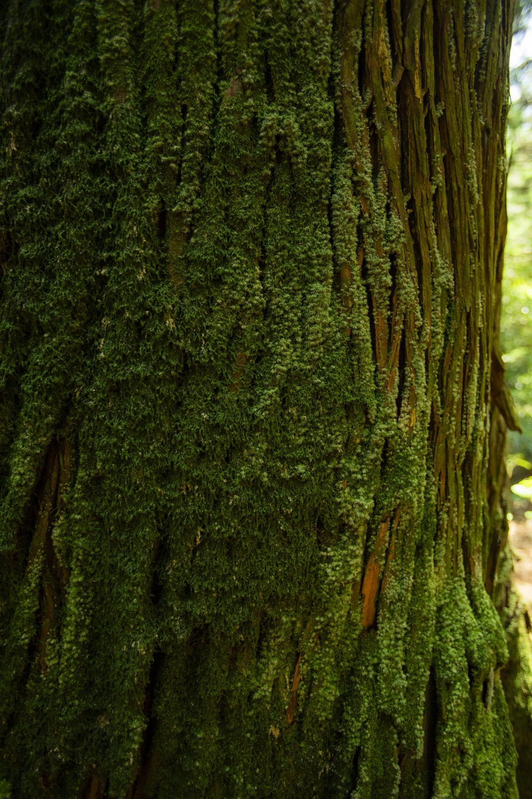
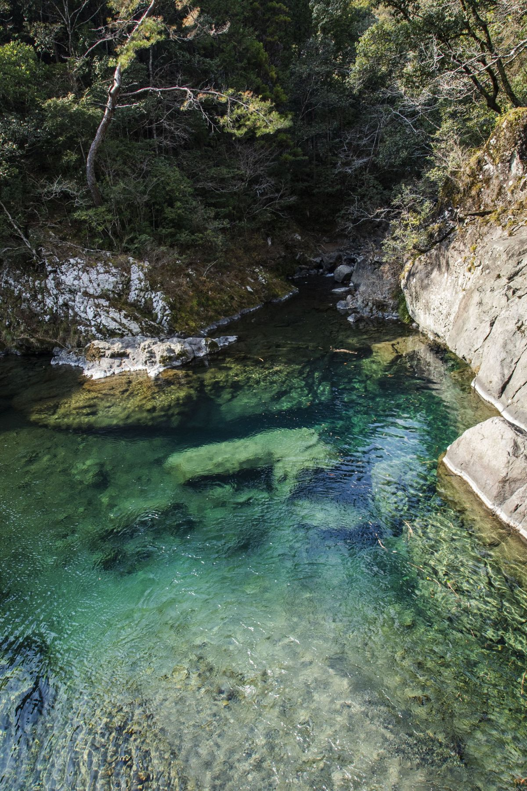
Works 01
River 川
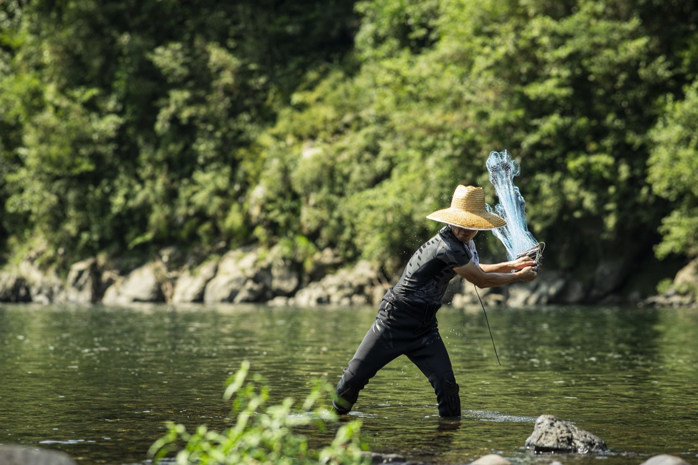
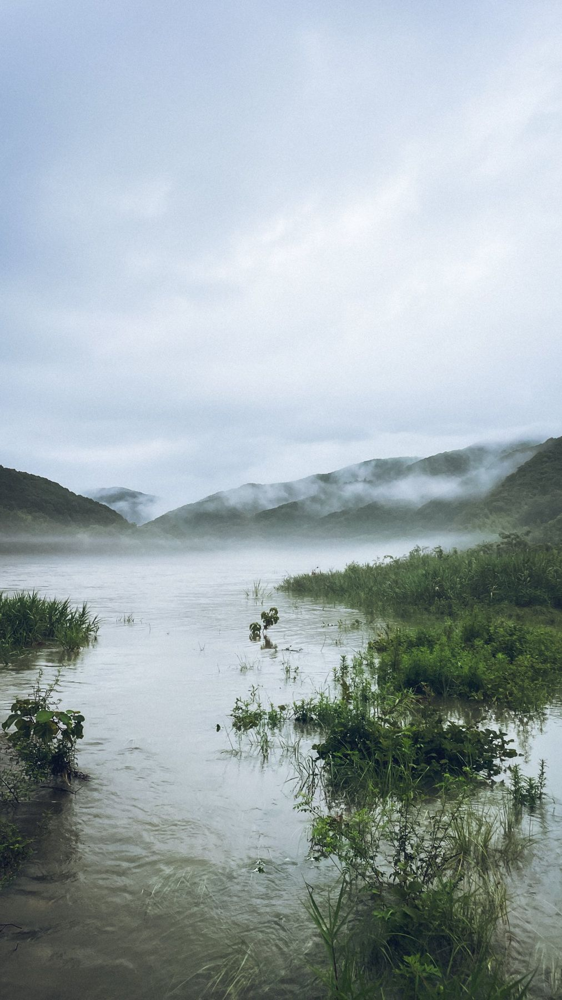
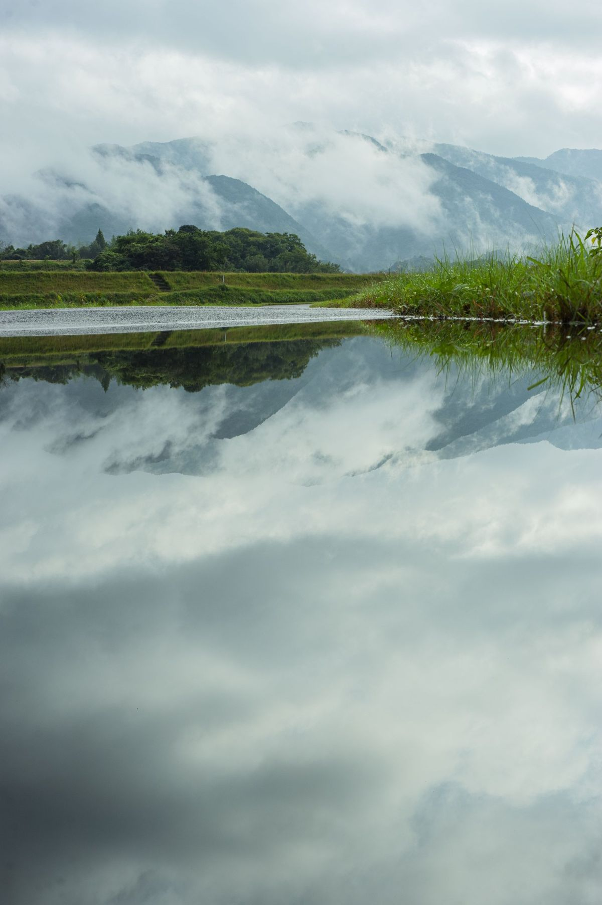
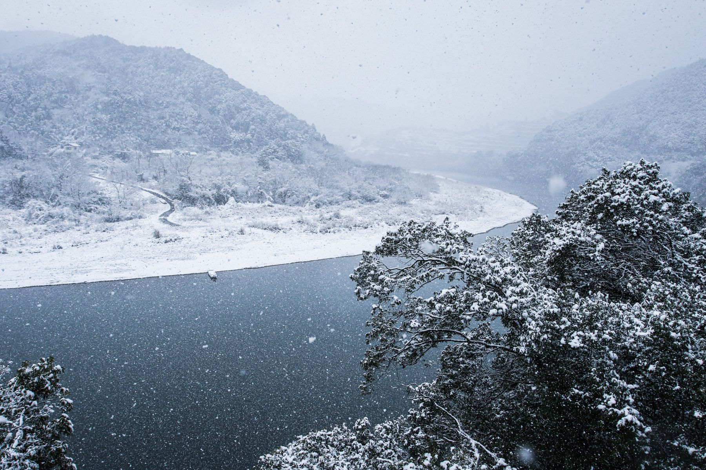
四万十川の川漁師 ／ 霧の朝 ／ 水鏡 ／ 雪の日の流れ
Works 02
Forest 森
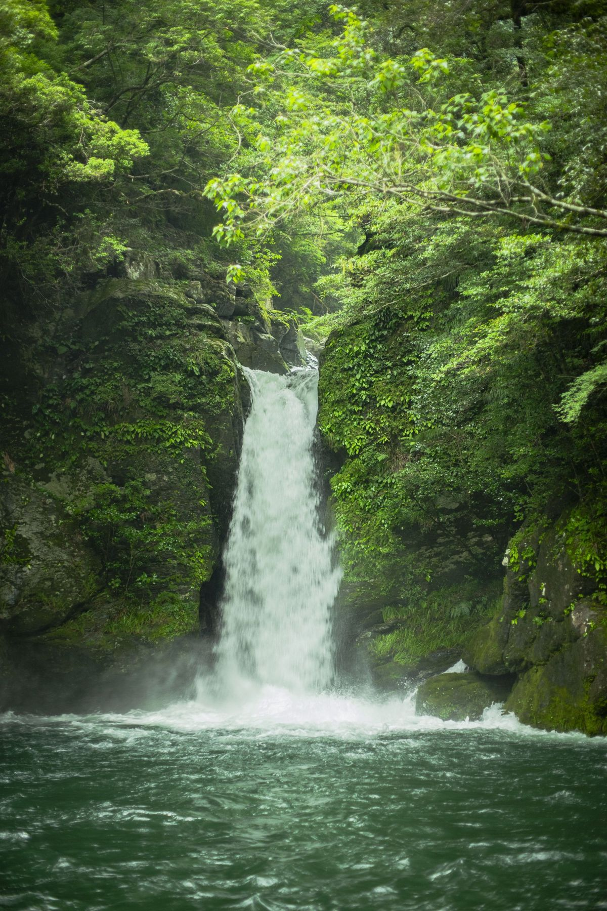
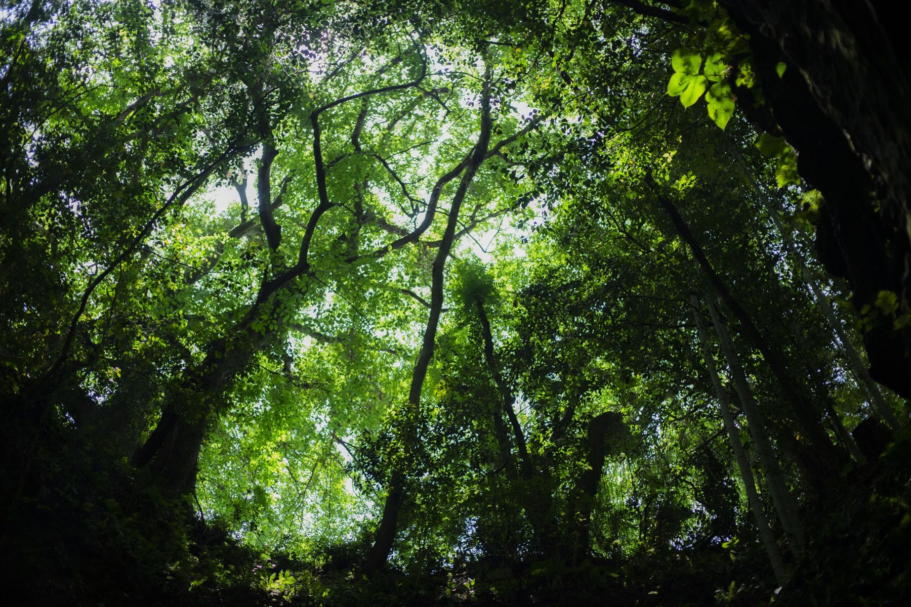
見上げれば、葉の天蓋。耳をすませば、滝の音。
川を育てているのは、この深い森です。
滝 ／ 森の天蓋
Works 03
Sea & Light 海と光
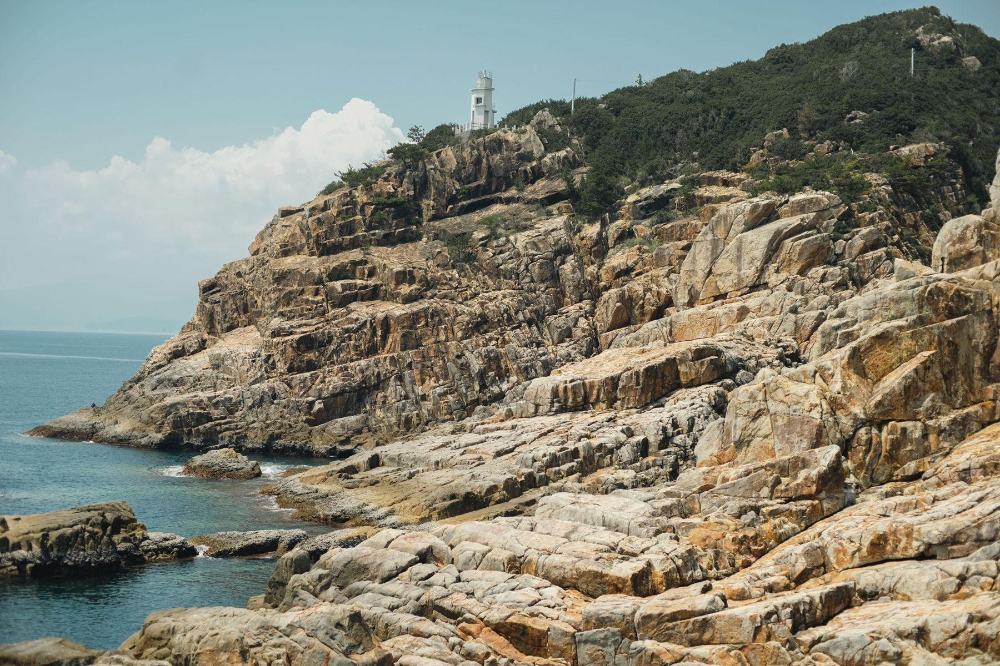
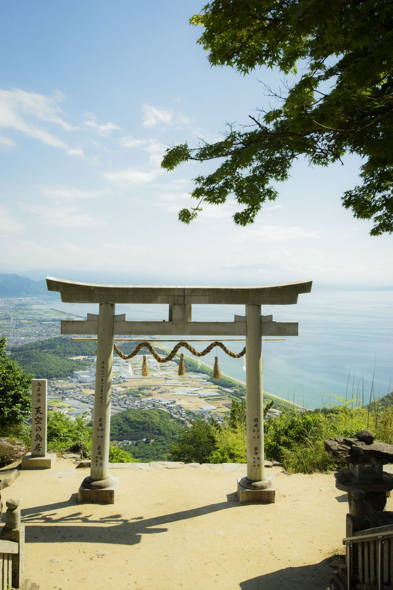
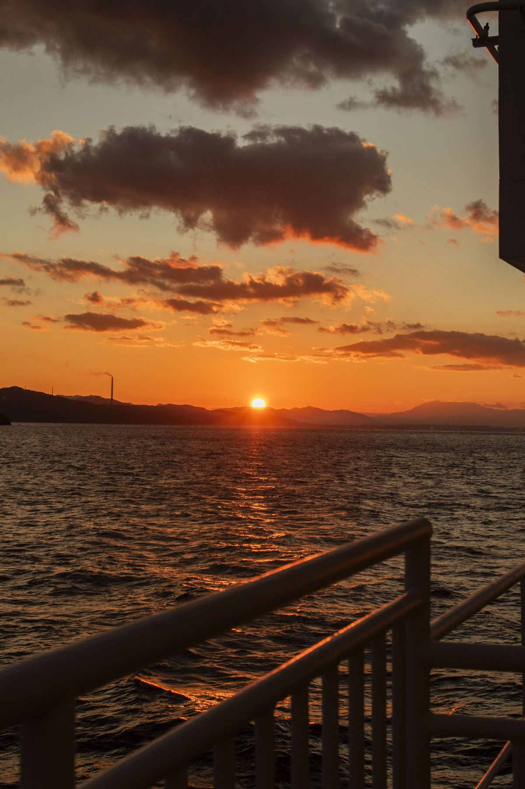
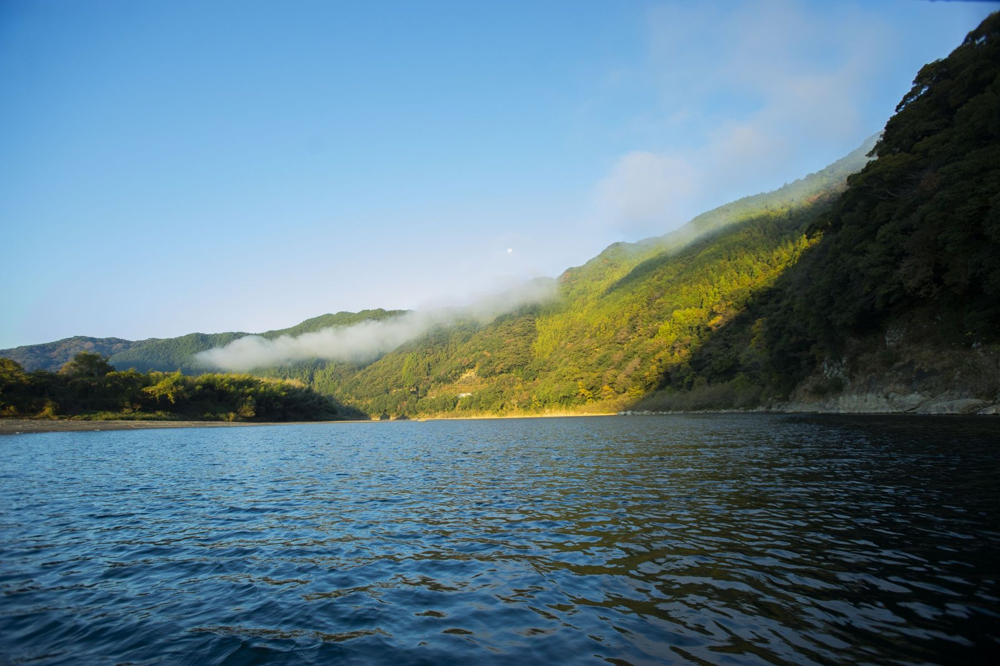
岬の岩肌 ／ 海を望む鳥居 ／ 夕日 ／ 朝の湖面
News
写真展・写真集のお知らせ
写真展の開催や写真集の発売などのお知らせは、インスタグラムで発信していきます。フォローしてお待ちください。
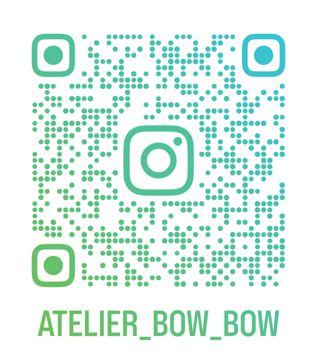
スマホで読み取るとインスタグラムが開きます